Home Page
Menu
Services
About
Contact Us
Feedback
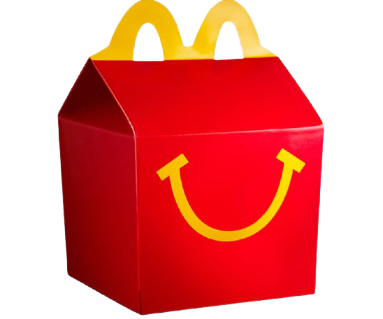
The following core values guide our actions as we strive to achieve our mission:
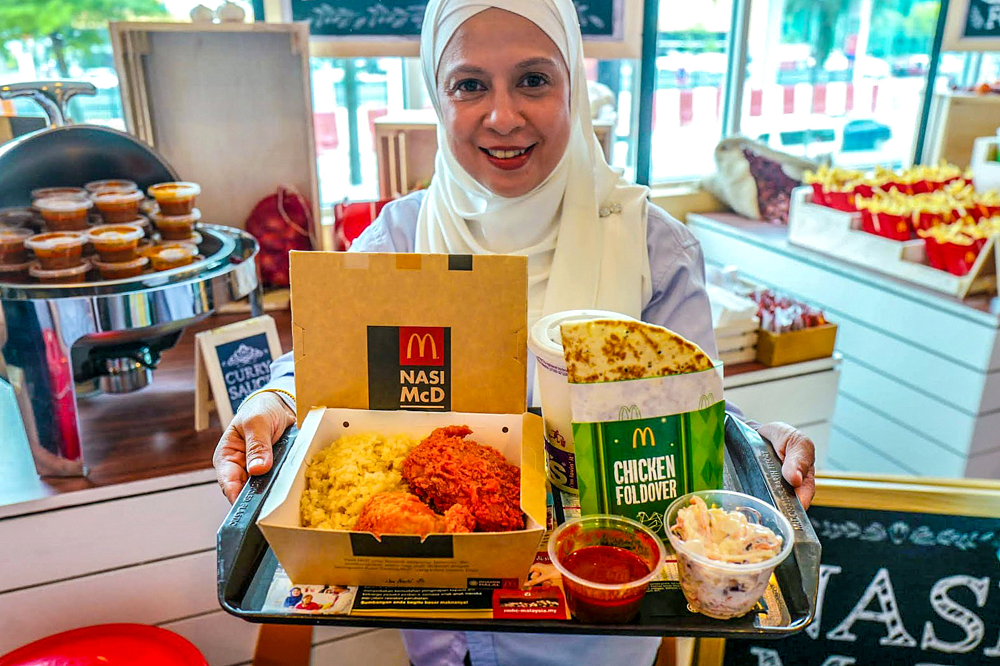
We place the customer experience at the core of all we do
Our customers are the reason for our existence. We demonstrate our appreciation by providing them with high quality food and superior service, in a clean, welcoming environment, at great value. Our goal is outstanding QSC&V for each customer every time.
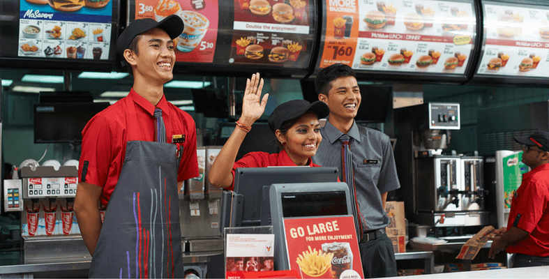
We are committed to our people
We provide opportunity, recognise talent, and develop leaders. We believe that a diverse team of well-trained individuals working together in an environment that fosters respect and drives high levels of engagement is essential to our continued success.
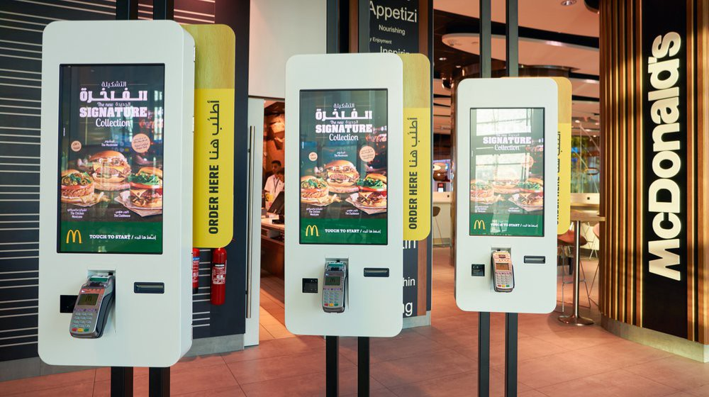
We believe in the McDonald’s® System
Owning a McDonald’s business model, depicted by the “three-legged stool” of owner/operators, suppliers, and company employees, is our foundation, and the balance of interests among the three groups is key.
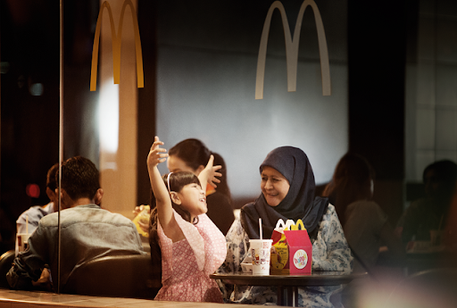
We give back to our communities
We take seriously the responsibilities that come with being a leader. We help our customers build better communities, support RMHC, and leverage our size, scope and resources to help make the world a better place. We are committed to sustainable business practices and are determined to conduct our operations in a manner that does not compromise the ability of future generations to meet their needs.
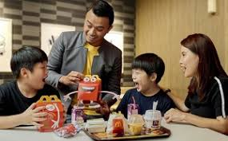
We operate our business ethically
Sound ethics is good business. At McDonald’s , we hold ourselves and conduct our business to the highest possible standards of fairness, honesty and integrity. We are individually accountable and collectively responsible.
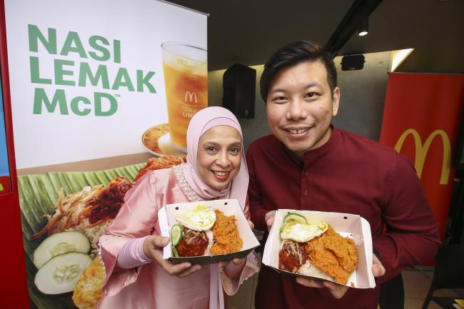
We strive continually to improve
We consider ourselves a learning organisation that is green and growing which anticipates and responds to changing customer, employee, system and community needs through constant evolution and innovation.
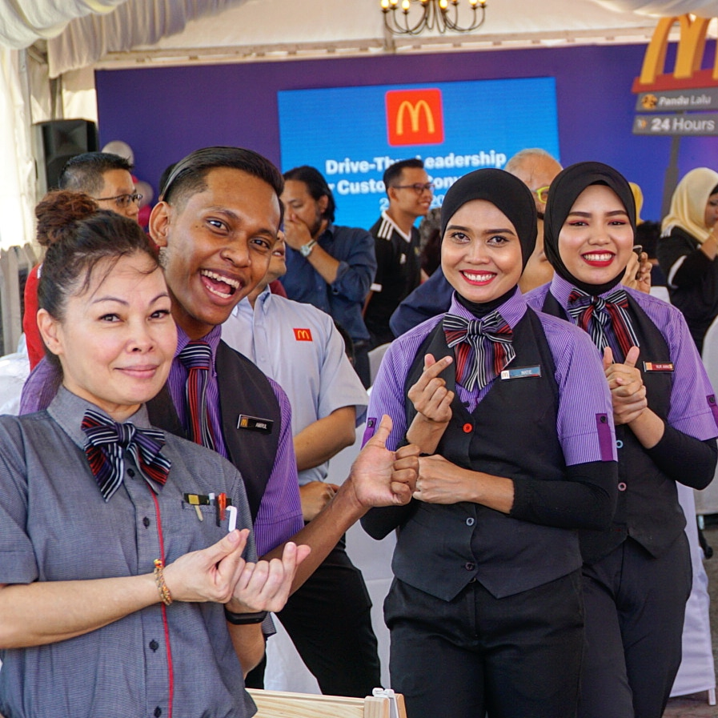
We grow our business profitably
Our stakeholders support our ability to serve our customers. In return, we work to provide sustained, profitable growth for all members of our system and our investors.
History
The birth of McDonald's® began with Raymond Albert Kroc. Ray Kroc was the exclusive distributor of a milk shake maker called the Multimixer. Meanwhile, two brothers, Richard and Maurice McDonald owned and ran a hamburger restaurant in San Bernadino, California, in the 1950s. Ray Kroc heard how well the McDonald brothers were doing using his Multimixers to serve their customers. He met up with them and acquired the franchising right from them to run McDonald's® restaurants.
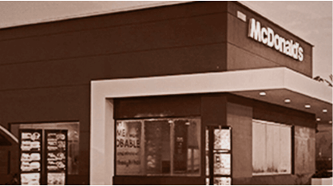
In 1955, Ray Kroc founded the McDonald's® Corporation and opened the first restaurant in Des Plaines, Illinois. In 1961, he bought out the McDonald brothers. And the rest, as they say, is history. McDonald's® grew into the largest restaurant organisation in the world. Today, there are more than 33,000 McDonald's® restaurants in 119 countries.
Ray Kroc died in 1984 but his legacy is very much alive. His success story continues with McDonald's® families of employees, franchisees and suppliers. His commitment, dedication and achievements continue to live on at McDonald's® restaurants across the world.
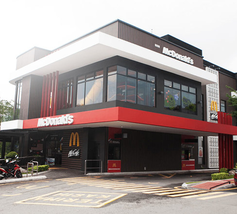
McDonald’s® Malaysia Corporate Milestones
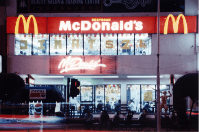McDonald’s first restaurant in Malaysia opened at Jalan Bukit Bintang, KL.
April 1982
 McDonald’s Delivery Service was introduced.
McDonald’s Delivery Service was introduced.
March 1994
 Launch of the global “i’m lovin’ it” campaign.
Launch of the global “i’m lovin’ it” campaign.
September 2003
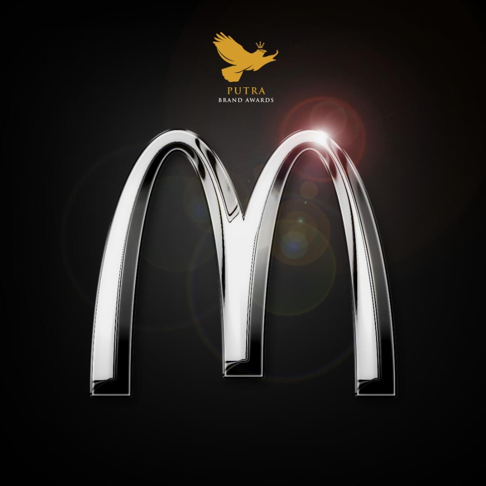McDonald’s won Gold at the Putra Brand Awards for the 5th year in a row.
2014
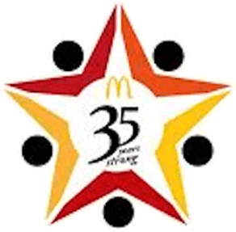McDonald’s marks its 35th Anniversary in Malaysia.
April 2017